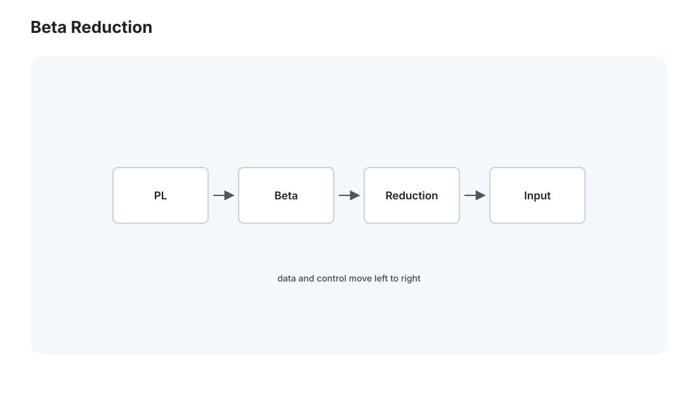
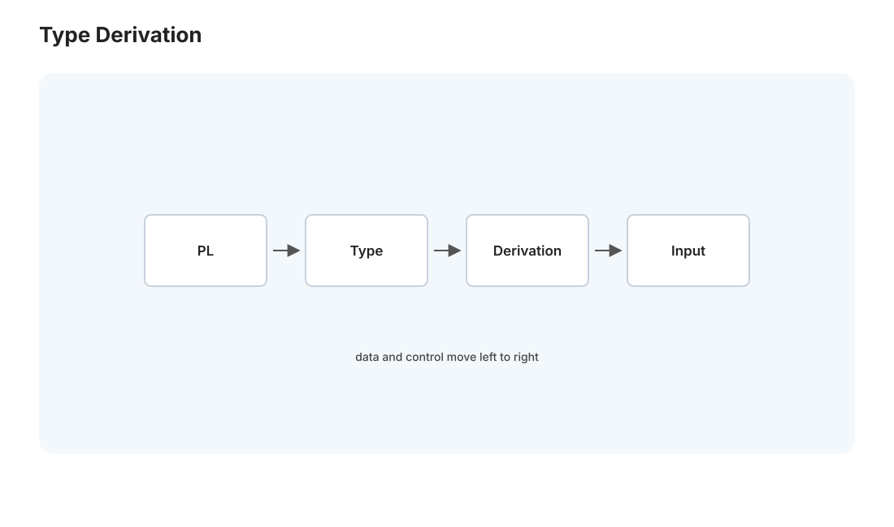
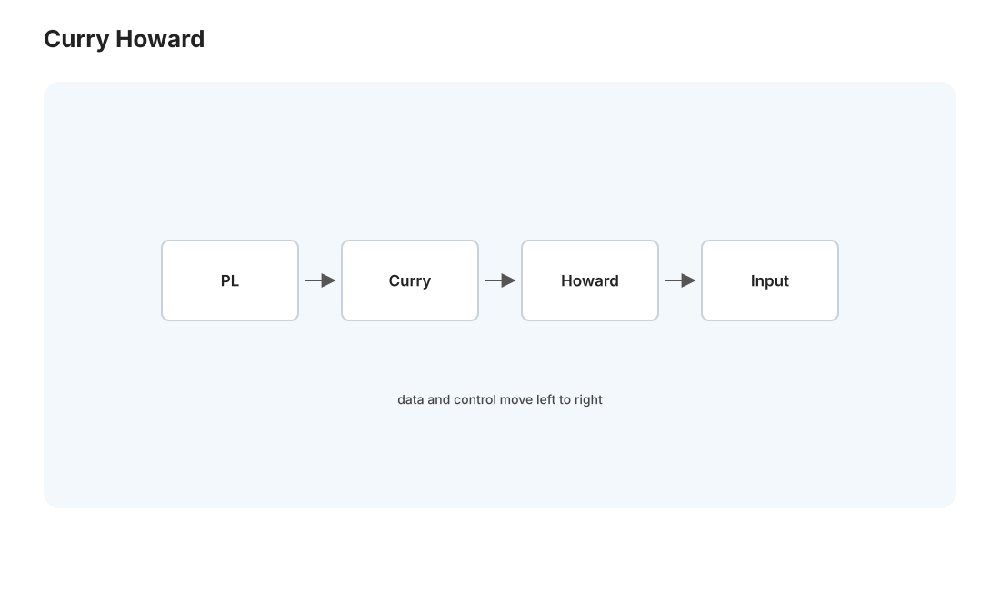

语言 I · λ 演算与类型系统
对标：Types and Programming Languages（TAPL, Pierce）/ Stanford CS242 ｜ 前置：toc-01（可计算性）、comp-02（类型检查初步）、数学站逻辑 编程语言不只是语法糖——它有一个数学内核。这一页讲两样地基：λ 演算（与图灵机等价的计算模型、函数式编程的根、"计算即代换"）和类型系统（把"程序不会出某类错"变成可证明的定理）。终点是 Curry–Howard 同构——"程序即证明、类型即命题"，这正是你 Lean4 计划（🔗 grad-math 后续）的理论心脏。对数学出身的你，这一页是"编程语言原来是一门逻辑学"。
1. λ 演算：最小的计算模型

图灵机（toc-01）是"命令式"的计算模型（改纸带状态）；λ 演算是"函数式"的——一切都是函数。语法极简，只有三样：
变量、抽象（\(\lambda x.e\) 定义一个"输入 x 返回 e"的函数）、应用（\(e_1\) 作用于 \(e_2\)）。计算只有一条规则——β 归约（代换）：
把函数体里的 \(x\) 换成实参 \(v\)。"计算 = 反复代换直到不能再化简"——就这么简单，却与图灵机等价（Church–Turing，toc-01）：能表达自然数（Church 数）、布尔、递归（Y 组合子）、一切可计算函数。
深刻之处：λ 演算证明"函数"足以作为计算的全部基础——不需要状态、赋值、循环。这是函数式编程（Lisp/Haskell/ML，🔗 pl-02）的哲学源头，也是"无副作用、引用透明"这些概念的根。你在 CS61A 见过的高阶函数、闭包，本质都是 λ 演算的直接后裔。
2. 类型系统：给程序上保险

无类型 λ 演算太自由——能写出无意义的项（把数字当函数调用）。类型给每个项一个类型、规定合法组合，在运行前排除一类错误（comp-02 的类型检查的理论版）。
简单类型 λ 演算（STLC）：类型 \(\tau ::= \text{基类型} \mid \tau_1 \to \tau_2\)（函数类型）。类型规则写成推理规则（分数线上是前提、下是结论）：
读作："在上下文 \(\Gamma\) 下，若 \(e_1\) 是 \(\tau_1\to\tau_2\) 的函数、\(e_2\) 是 \(\tau_1\)，则应用结果是 \(\tau_2\)"。类型检查就是构造这样一棵推导树（🔗 与数学证明同构，下一节揭晓）。
类型安全的核心定理【机理】：Progress（进展）+ Preservation（保持）= Soundness（可靠性）： - Preservation：若 \(e:\tau\) 且 \(e\to e'\)，则 \(e':\tau\)（求值不改变类型）。 - Progress：良类型的项要么是值、要么能继续求值（不会卡在无意义的中间态）。 - 两者合起来："良类型的程序不会出错（well-typed programs don't go wrong）"——Milner 的名言。这是类型系统价值的精确数学表述：类型检查通过 = 证明了程序不会有某类运行时错误。
3. 多态与类型推断：既安全又不啰嗦
STLC 要处处写类型，且 identity 函数要为每个类型写一遍。参数多态（泛型）解决之：\(\forall \alpha.\ \alpha\to\alpha\) 一个 id 适用所有类型（System F 的核心）。
Hindley–Milner 类型推断（ML/Haskell/Rust 局部推断的根）：编译器自动推出类型，不用你写——通过合一（unification）：把类型当带未知数的方程、求解约束（id 3 ⇒ α = int）。HM 让你既享受静态类型的安全、又几乎不用写类型标注——鱼与熊掌兼得（comp-02 埋的伏笔在此揭晓）。这是编程语言理论最实用的成果之一，你写 Rust 的 let x = ... 不用标类型，背后就是它。
4. Curry–Howard 同构：程序即证明（Lean4 的心脏）

本页的高潮，也是二十世纪逻辑与计算最深刻的发现之一——类型系统和逻辑证明系统是同一个东西：
| 逻辑 | 类型/程序 |
|---|---|
| 命题 \(A\) | 类型 \(A\) |
| 证明 \(A\) | 类型为 \(A\) 的程序（项） |
| 蕴含 \(A\to B\) | 函数类型 \(A\to B\) |
| 合取 \(A\wedge B\) | 积类型（元组）\(A\times B\) |
| 析取 \(A\vee B\) | 和类型 \(A + B\) |
| 全称 \(\forall\) | 依赖类型 \(\Pi\) |
"证明一个命题" = "构造一个该类型的程序"，"类型检查" = "验证证明正确"。函数 \(A\to B\) 就是"从 A 的证明造出 B 的证明"的过程——modus ponens 就是函数应用！
这正是 Lean4 / Coq 这类证明助手的原理（🔗 你的 grad-math/lean-lab 计划的理论根基）：你在 Lean 里"写证明"其实是"写一个类型正确的程序"，Lean 的类型检查器（基于依赖类型——类型可以依赖值，表达 \(\forall/\exists\)）验证它——编译通过 = 定理得证。这就是为什么 Lean 能当"幻觉闸门"：类型检查器不接受错误证明，就像它不接受类型错误的程序。你学 Lean4 时，本页是它的地基——形式化证明不是玄学，是 Curry–Howard 的直接工程化。
5. 练习与要点
例 1（β 归约手算） 化简 \((\lambda x.\lambda y.x)\,a\,b\)（Church 的 true/取第一个）→ \(a\)——亲手做几步代换，理解"计算即代换"，λ 演算就不神秘了。
例 2（类型推导树） 为 \(\lambda f.\lambda x.f\,(f\,x)\)（应用两次）构造类型推导，推出它是 \((\alpha\to\alpha)\to\alpha\to\alpha\)（正是 Church 数 2！）——体会类型如何编码结构。
例 3（Curry–Howard 具体化） 函数 fst : A × B → A 对应哪个逻辑定理？（\(A\wedge B \Rightarrow A\)，合取消去）——"这个函数就是这条定理的证明"亲眼看一次，为 Lean4 铺路。\(\blacksquare\)
下一页：语言 II——语义、函数式与垃圾回收：程序"意义"的严格定义、函数式范式的威力、以及内存自动管理的机制。